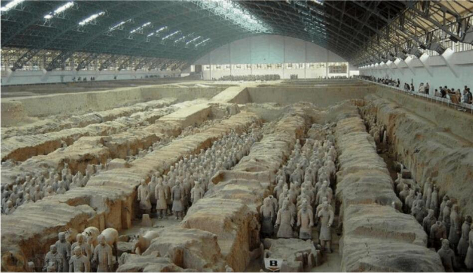
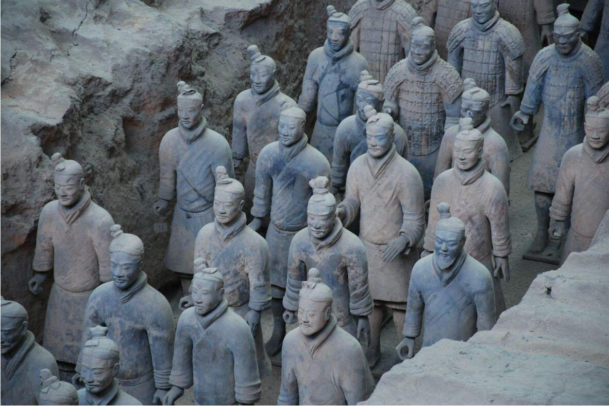
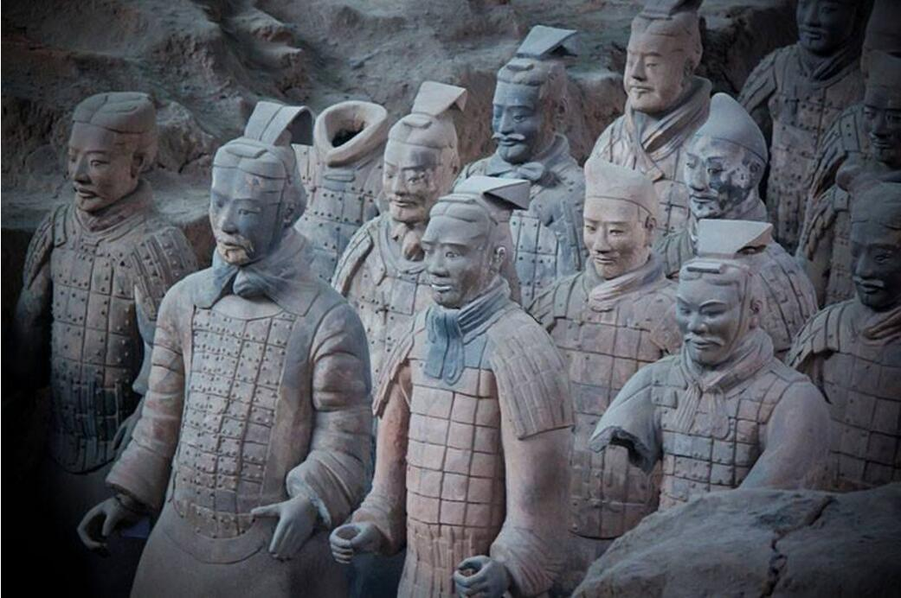

| 景点名称： | 秦始皇兵马俑 | 所在城市： | 西安 | 地理位置： | 陕西省西安市临潼区 |
简单介绍
| 兵马俑博物馆位于西安临潼区秦始皇陵东1.5公里处，是秦始皇陵的从葬坑，被誉为"世界第八大奇迹”，1987年由联合国教科文组织列入“世界人类文化遗产”目录，现已被评为国家5A级旅游景区。 1974年3月，陕西临潼县的村民在秦始皇陵东1.5公里处打井时，意外地发现了许多碎陶人，经考古工作者探测，这是一个长方形的秦代兵马俑坑。按照被发现的时间，它们分别定名为一、二、三号坑。这一发现震惊中外，1975年国务院批准在一号坑原址上建一座占地16000平方米的博物馆，并于1979年10月正式对外开放。二号和三号展坑也陆续于1989年和1994年正式展出。1999年6月，又奇迹般的发现彩色兵马俑。 兵马俑坑的规模宏大，三个坑共约有2万多平方米，坑内共计有陶俑马近八千件，木制战车一百余乘和青铜兵器4万余件。其中一号坑规模最大，面积12000平方米，有俑马六千余件；二号坑次之，面积是前者的一半，有俑马千余件；三号坑只有500余平方米，内有武士俑68个。根据考古判断，这几座从葬坑象征着始皇生前的宿卫军守卫着陵园，而三座坑是按兵法布阵的，其中三号坑是总指挥部统帅三军。 这是世上无与伦比的地下军阵，站在一号坑前最令人感到强烈的震撼：最前面的是前锋，二百一十名武士俑，横列三队，手持弓驽，背负箭囊；后面紧紧跟随的是身穿铠甲的步兵，间杂着驷马战车组成四十路纵队从十几条坑道里涌出；军队左右各有侧翼，末尾又有三列后卫。整个军阵布局严密，酷似待发之势，令人联想到当年始皇帝金戈铁马，横扫六合，所向披糜的声威。 兵马俑身高在1.75米至1.85米间，根据装束、神态、发式的不同，分为将军俑，武士俑，车士俑等。兵马俑通体风格浑厚、健美、洗炼，每个陶俑的脸型、发型、体态、神情都各不相同。陶俑、陶马原奔都有彩绘，但由于后来的火烧和浸泡，大多已剥落变色。坑内还出土有剑、矛、戟、弯刀等青铜兵器，虽然埋在土里两千多年，依然刀锋锐利，闪闪发光，可以视为冶金史上的奇迹。 目前一号坑中的兵马俑，由于保护技术有限，大部分已回埋，只展出1000余个。 |
图文介绍
|  |
| 兵马俑即秦始皇兵马俑，亦简称秦兵马俑或秦俑，位于今陕西省西安市临潼区秦始皇陵以东1.5公里处的兵马俑坑内。 兵马俑是古代墓葬雕塑的一个类别。古代实行人殉，奴隶是奴隶主生前的附属品，奴隶主死后奴隶要作为殉葬品为奴隶主陪葬。兵马俑即制成兵马（战车、战马、士兵）形状的殉葬品。 1974年3月，兵马俑被发现；1987年，秦始皇陵及兵马俑坑被联合国教科文组织批准列入《世界遗产名录》，并被誉为“世界第八大奇迹”。先后已有200多位国家领导人参观访问，成为中国古代辉煌文明的一张金字名片。 人殉是伴随原始公有制的瓦解而萌芽，至奴隶制建立而盛行的一项残酷的丧葬制度。人殉最兴盛的时代是殷商时期，商代贵族大墓中都有殉人。在安阳殷墟工陵区内，已发掘的十几座大墓中被生殉、杀殉的多达五千余人。 周王朝吸取了殷商暴政的教训，强调“明德保民”。周礼的诞生和推行，使得人殉现象得到很大程度的抑制，但并未根绝。到了春秋时期，列国争霸，时代动荡，人殉复燃。战国时期，诸侯各国先后废止了人殉制度。秦献公元年（前384年），“止从死”，秦国正式废止人殉制度。 春秋战国之际的社会变革促使葬俗发生了变化，出现以俑殉葬，即用陶俑、木俑等来代替人殉。“俑”的本意就是人殉，当人殉逐渐淡出人们的视野之后，“俑”便成了墓葬中陶塑、石雕、人像的专有名词。秦兵马俑就是以俑代人殉葬的典型，也是以俑代人殉葬的顶峰。秦俑之所以在规模、写实程度上达到如此的高度，除了工匠的智慧之外，还与历史上第一个封建皇帝的意志分不开。秦俑严格地摹拟实物，带有肖像写生的性质和特点，并且在规模和气势上更胜一筹。 据《史记》记载：秦始皇陵由丞相李斯依惯例开始主持规划设计，大将章邯监工，修筑时间长达39年之久，兵马俑是修筑秦陵的同时制作并埋入随葬坑内。 |
 |
| 1980年在秦始皇陵西侧发现了两辆用青铜制作，以四匹马拉的战车，大小为真车马的二分之一。是目前发现年代最早、形体最大、保存最完整的铜铸车马，对研究中国古代车马制度、雕刻艺术和冶炼技术等，都具有极其重要的历史价值。被编号为1号的战车是立车、单辕双轮，车厢为横长方形，车门在车厢的后面，车上有圆形的铜伞，伞下站着御官，双手驭车，前驾四匹马。二号车为安车，也是单辕双轮。车厢为前后两室，二者之间有窗，上车的门在后面，上有椭圆形车盖。车体上绘有彩色纹样。车马均有大量金银装饰。这两铜车马都是事先铸造而成，后又经过细部加工的，工艺水平非常之高。铜马身上缨络和链条用的铜丝直径仅半个毫米左右，有的则更细。据推测，铜车马坑当是秦始皇陵陪葬坑组成的一部分。 秦始皇陵铜车马每个手指的关节、指甲都塑得非常逼真，俑身略同前倾，双目注视前方，半抿双唇，面带微笑，神态恭谨，一个忠于职守的高级御官形象活脱脱地被塑造出来。铜马共有四匹，四肢粗大，比例匀称，膘肥体壮，筋骨强健，中间两马举颈昂首，两侧马头微向外转，静中寓动，造型风格和秦陵陶马相似。车马工艺精湛，如装饰用的缨络，用细铜丝绞结而成，颇似麻毛。值得特别提出的是错磨和彩绘相结合，大大增强了艺术效果。作者按马体的不同部位的毛向错磨，再涂彩色，造成真实的皮毛感。细部的真实和鲜明的质感是这乘铜车马造型艺术的一大成就。车马通体彩绘，图案花纹风格朴素明快大方，以白色为基调的彩绘肃穆典雅，配以大量的金银构件，更显得华贵富丽，这套大型的人俑车马代表了秦代青铜铸造工艺的突出成就。 |
| 语音介绍 |
相册




|